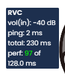
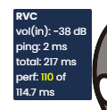
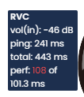

#
Deiteris' W Okada Fork
Last update: July 18, 2025
#
Introduction
W-Okada is a voice changer that uses RVC for its conversion.
There are two versions of this voice changer, the offical original made by Wok, and the Deiteris fork made by Deiteris.
This guide will be about the Deiteris fork since it has better preformence and quality.
RVC does NOT mean realtime voice changer. RVC means Retrieval-based-Voice-Conversion
#
Is The W-Okada Deiteris Fork Safe?
RVC Models are PyTorch Models, a Python library used for AI. PyTorch uses serialization via Pythons' Pickle Module, converting the model to a file. Since pickle can execute arbitrary code when loading a model, it could be theoretically used for malware, but Wokada Deiteris Fork has a built-in feature to prevent code execution along the model. Also, HuggingFace has a Security Scanner which scans for any unsafe pickle exploits and uses also ClamAV for scanning dangerous files.
#
Pros & Cons
The pros & cons are subjective to your necessities.
- Currently stable
- Good Performance
- Has great support for Nvidia, AMD, Intel, Mac, Linux, Windows
- Uses a Web User Interface, meaning it can be run on the Cloud
- Uses FP16 Inference by default, and let's you choose to use FP32 for better quality/precision
- Uses a Web User Interface, having issues on some browsers, and bugs with renaming or deleting models on it
- Doesn't have an active development recently
- Doesn't let you choose the embedder, using only RVC models trained on contentvec (the majority)
#
#
System & Hardware Requirements
- Windows 10 or Later
- macOS 12 Monterey or later. With Apple Silicon or Intel CPU
- Any Linux Distro
and
- At least 6GB of RAM
- At least 6GB of free disk storage
#
For GPU-conversion
TLDR: Make sure you have Nvidia RTX 20xx or AMD Radeon RX 5xxx or better. GTX 10xx or RX 580 will also work, but may run into issues with games and higher delay. If you have an iGPU (mostly AMD Radeon Graphics or Vega) use online hosted alternative instead.
Long answer:
Minimum:
An integrated graphics card: AMD Radeon Vega 7 (with AMD Ryzen 5 5600G) or later; with 2GB VRAM (in FP32 mode), ~1GB VRAM (in FP16 mode, if supported). But this is NOT recommended at all and we will most likely not recommend you to download the voice changer with iGPUs.
A dedicated graphics card: Nvidia GeForce GTX 900 Series or later, or AMD Radeon RX 400 series or later, or Intel Arc A300 series or later.
Recommended:
- A dedicated graphics card Nvidia GeForce RTX 20 Series or later, or AMD Radeon RX 5000 series or later, or Intel Arc A500 series or later.
#
For CPU-conversion
TLDR: don't bother. You can't run games, discord usage might be the only thing that will work decently, but you might potentially damage your CPU. People with no GPU usually have old CPU's, so delay will be high too. Not worth it.
Minimum:
- Intel Core i5-4690K or AMD FX-6300.
Recommended:
- Intel Core i5-10400F or AMD Ryzen 5 1600X.
CPU-Conversion is not recommended at all
If you plan on playing games at the same, do not use CPU-conversion. With CPU, the delay will be massive and your PC will not run smoothly at all. If you have a higher-end CPU you can make it work, but those that have higher end CPUs most likely also have higher end GPUs, so you should be using your GPU if possible.
#
Online Alternatives [Colab/Kaggle]
#
Colab
You need the Google Colab Paid Tier to run this, as it uses a Web User Interface, else you could risk getting disconnected or getting banned off Colab.
Go here
Then run all the needed cells one by one, create an ngrok account which is for free. After you started "server ngrok", an URL will be created - you open that URL, and that's where the voice changer will be on.
#
Kaggle
Go here
It has a rough tutorial included, needs cell phone number verification and longer to set up, but it's free once you have it, it is worth it. On Kaggle there should be an option to import from Colab, which would be the fastest way to set it up
#
Virtual Audio Cable
#
A Virtual Audio Cable (VAC) is what you need to use the voice changer on Discord & Games.
For Windows
Download this: VAC Lite (Virtual-Audio-Cable by Muzychenko). (Be sure to not use any toher vac like VB Audio Cable.)
Run
setup64, not 64a, after extracting the zip to a new folderAfter installing the VAC Lite, it changes your default audio system. Click Yes when it asks you to open the audio device settings (or press WIN+R, type "mmsys.cpl" if you closed it already), and change your Recording and Playback devices back to your usual devices. Same for communications device aswell (right click -> set as default communication device)
For Mac
Download either: Blackhole Virtual Audio Cable or VB-Audio
#
Windows
- Download based on your GPU. You don't know what GPU you have? Open Task Manager > Performance tab and check for your GPU0 and GPU1 names. Prioritize the Nvidia one if you have one, else use the other.

#
Use Online Hosted if you have an integrated GPU (AMD Radeon Graphics ; AMD Radeon Vega ; Intel UHD) and if you do not have a GPU at all
#
Download NVIDIA on Windows
- The latest version as of December 7th 2024 is: nvidia-b2332 (click here to download)
If you have a GTX 700 card or below, use AMD/Intel version instead.
#
Download NVIDIA RTX 5000-series on Windows
- NVIDIA RTX-5000 series, the newest release of GPU's, require a separate download. You do not need it if you have an older GPU, follow the normal Nvidia link in that case. nvidia-5000-Series (click here to download)
Download all 3 files, then extract the .zip file, it will automatically extract ALL 3 FILES into one. Then open the MMVCServerSIO folder and run MMVCServerSIO.exe (or called MMVCServerSIO if you don't have extensions activated).
#
Download AMD, INTEL and CPU on Windows
- The latest version as of December 7th 2024 is: dml-b2332 (click here to download)
Intel UHD Graphics do NOT work at this point in time. Use Online Alternative.
#
Opening on Windows
First Make sure you have 7zip or WinRAR for extracting / unzipping.
After the download, you extract the zip file. You open the folders until you see an exe application called
MMVCServerSIOand run that.If nothing opens after a while of codes loading in, then open a browser and type in
http://127.0.0.1:18888/. This is a local URL, it runs on the WebUI.
#
Mac
#
Download Mac Silicon
- The latest version as of December 7th 2024 is: arm-b2332 (click here to download)
#
Download Mac Intel
- The latest version as of December 7th 2024 is: macos-amd-b2332 (click here to download)
#
Opening on Mac
Double click the voice-changer-macos-arm64-cpu.tar.gz file. The voice changer will unpack and the MMVCServerSIO folder will appear.
Open the extracted MMVCServerSIO folder.
Double-click
MMVCServerSIOto run the voice changer.
Apple quarantine stops you from running the voice changer
You do not get a popup notification for this, so if it does not open or says "Pytorch is damaged", do the following:
Open the Terminal
Run the following command:
xattr -dr com.apple.quarantine <PUT IN THE PATH TO YOUR MMVCServerSIO FOLDER HERE>For example, if you extracted the voice changer to your desktop, the command may look as follows:xattr -dr com.apple.quarantine ~/Desktop/MMVCServerSIONow, open the extracted MMVCServerSIO folder and run
MMVCServerSIOto run the voice changer.
If nothing opens, then open a browser and type in http://127.0.0.1:18888/. This is a local URL, it runs on the WebUI.
#
Linux
- For NVIDIA, you need to download both these files:
- For AMD, you need to download both these files:
Install portaudio with sudo yum -y install portaudio. Installation of CUDA Toolkit or AMD HIP SDK is NOT REQUIRED. All other necessary libraries are bundled with the application.
I'm not sure about the capabilities of UI tar archive extractors, but you can extract these archive parts with the following command that will merge them and extract: cat voice-changer-linux-amd64-cuda.tar.gz.* | tar xzf - (change cuda to rocm if necessary).
#
Opening on Multi-PC Setups
Create a file named
.envon the same folder whereMMVCServerSIO.exeis located. Open it up with a notepad, copy paste the settings from the GitHub link.After that, you create another file with the file extension ending
.bat, open it up with a notepad, copy paste what is needed in there again from the GitHub link.Now run the bat file. After it starts, you should be able to open the link. For example, if you specified
HOST=192.168.0.1andALLOWED_ORIGINS='["https://192.168.0.1:18888"]'), you should be able to openhttps://192.168.0.1:18888in your browser and use the voice changer UI from other machines in your local network.
#
Voice Models
#
Adding Models
#
- Click on
Editon the small blue square located around the the top left side - Pick any slot you want, click
upload - Only RVC models will work. If you have a gpt-sovits one or any other, they will not work.
- Select
Type: RVC, thenselect fileon theModelslot and upload your.pthfile. - No need for an
Indexfile, but you can upload it. This controls the accent of the voice model
#
Deleting Models
If you wish to delete a model, you can overwrite the slot with a new model. If you insist on fully emptying a slot, head over to the model_dir folder, open the folder of the slot number you want to delete, and delete the model from that folder
#
Audio Setup
#
Discord & Games
On the voice changer app wokada, you select:
- Input: Your microphone
- Output: Virtual Cable
- Monitor (if you wish to hear the voice changer on your headphones aswell): Your headphones
On discord and games, you select:
- Input: Virtual Cable
- Output: Your headphones
For Linux, read the Virtual Cable step
#
Client and Server Setup
Audio: CLIENT
- Uses MME (normal audio processed through windows. You use this automatically with every application)
- You can use the boxes echo, sup1, sup2 using this
Audio: SERVER
- Use S.R. 48000
- I recommend using [Windows WASAPI] on all prefixes for less delay, because this uses your audio devices (e.g. microphone) directly, before processing through windows.
- Both Input and Output has to be the same (Windows WASAPI), you can't use MME for input and then Windows WASAPI for Output. You may also use ASIO.
- You can not use the in-built noise suppressions in this mode
ASIO > WASAPI > MME as a general thumbrule (this also affects delay)
Sometimes Client does not work, then use SERVER with prefix "MME" or "Windows WASAPI". You can not use the in-built noise suppression and echo fix if you use SERVER.
#
Settings Explained
PASSTHRU button:Sends your actual voice and not the voice changer through the virtual cable. You want this to be GLOWING GREEN or GREY (grey for dark mode users) for the voice changer to work.F0 det:Pitch algorithm. Both RMVPE (for the best quality and robustness) and FCPE (for nice quality and being lightweight) are good options.Chunk:Controls the delay (lower number means less delay, but please check out the recommended settings for what your GPU is capable of).Extra:Controls voice model quality. 2.7s is the max, anything above is not worth it and can cause issues for no benefit.
#
VOL:
in:This raises the microphone volume before it goes into the voice changer (Recommended to leave it on the default or if needed, not to go too high, else it increases background noise and makes the voice sound worse).OUT:Raising voice changer volume on the output.MON:Increases volume of your headphones that you set on "mon" if you selected to hear yourself with the voice changer.
Pitch:This is the pitch. Going into negative will make it lower pitch, going higher will make it higher pitch. If you have a male voice using a female voice, aim for 10 - 14, this depends on your voice, try around those numbers until you find a sweet spot.Formant Shift:Alters harmonic frequencies and changes the voice timbre without affecting the pitchIndex:This controls the accent of the voice model. In most cases, using Index on Realtime Voice Changer can add realism if you speak the language the model was trained in. If you have a heavy foreign accent, you may use this at a low rate. Beware, this increases CPU usage
In. Sens:microphone threshold, increasing this will cause less background noise to get picked up if it's a problemSup2:Noise suppression on your microphone.Sup1:Noise suppression but weaker, not recommended to use this at all, because it barely has any impact whilst reportedly, making the voice inconsistentEcho:if you experience echo issues despite having sup2, In. Sens to the right and having lowered your windows system value, then this will help you as a last resort
#
Settings
#
Advanced Settings
- Protocol: rest (Use SIO if you want less delay but if you encounter any issues with SIO switch back to rest. Rest has slightly more delay than SIO)
- Crossfade length: 0.1 or 0.15 (0.1 for fastest voice, 0.15 for improved quality but increases delay by 50 ms. It is NOT recommended to go below 0.1)
- SilenceFront: Reduce GPU usage when idle. This only reduces GPU resources when you're not talking or making sounds
- Force FP32 mode: on (THIS IS OFF BY DEFAULT! Turning this on improves stability. Increases VRAM usage by 200 MB)
- Disable JIT compilation: off for faster loading speed of the program, on for slightly better performance (10-15 ms) for Nvidia only)
- Convert to ONNX: Reduces delay and slightly reduces gpu usage. Enabling this increases CPU usage by around 5-10%. Reduces the quality of the voice a bit. If you decide to enable this, pair it with rmvpe_onnx for even less delay
- Protect: Reduces the occurrence of robotic sibilants and robotic breathing, but also reduces the effect of the index file. Lower values increase this protection, higher values decrease it. The default value is 0.5, which means that the protection is disabled, reduce this value to 0.33 to enable it
#
Finding my own settings for Chunk
First start with 500 ms, check what number your perf is and go closer to that number but not lower.
Example: if your perf is 200, go down to 250 with your chunk. Chunk affects perf value, and Extra as well.
If your perf value is green, your selected chunk is stable. You can experiment and go down in chunk for less delay, or increase extra for more quality (would not recommend to go above 2.7s extra. Anything above uses more resource for no clear benefit).
If your perf value is yellow, your selected chunk is enough, but audio may be unstable if you run other processes at the same time. Operation in this range will also incur high GPU usage. Increasing Chunk size or reducing Extra is recommended.
If your perf value is red, the voice changer is unstable. Increase chunk size or reduce Extra.
#
Known working settings for Chunk and Extra
These settings are intentionally higher than what your GPU is capable of
If you are playing a video game with the voice changer, you will have to increase the chunk higher than what you usually can handle. This is because the game runs on GPU and the voice changer aswell. The game will always take higher priority by default, so the listed settings are safe options that should run with most games. If you run into issues, you will need to lower quality and limit your FPS, or increase chunk. It is best to first tweak your game's settings first
It is recommended to go up to Finding my own settings after you are comfortable with the program
RTX xx90 (e.g. 3090)
RTX xx80 Ti (e.g.3080 Ti)
RTX xx80 (e.g. 3080)
RTX xx70 Ti (e.g. 3070 Ti)
RTX xx70 (e.g. 3070)
RTX xx60 Ti (e.g. 3060 Ti)
RTX xx60 (e.g. 3060)
RTX xx50 (e.g. 3050)
GTX 16xx-series
GTX 10xx-series
GTX 900-series
MX 330
30 - 60 ms chunk + 2.7s extra
30 - 60 ms chunk + 2.7s extra
100 - 120 + 2.7s extra
50 - 80 ms chunk + 2.7s extra
50 - 80 ms chunk + 2.7s extra
50 - 90 ms chunk + 2.7s extra
60 - 90 ms chunk + 2.7s extra
110 - 130 ms chunk + 2.7s extra
140 - 180 ms chunk + 2.7s extra
200 ms chunk + 2.0s extra
250 ms chunk + 1.0s extra
500 ms chunk + 0.6s extra
perf number + 40 ms chunk
perf number + 40 ms chunk
perf number + 40 ms chunk
perf number + 40 ms chunk
perf number + 40 ms chunk
perf number + 40 ms chunk
perf number + 50 ms chunk
perf number + 60 ms chunk
perf number + 60 ms chunk
perf number + 80 ms chunk
perf number + 80 ms chunk
perf number + 100 ms chunk
7xxx XT cards
6xxx XT cards
5xxx XT cards
7xxx cards
6xxx cards
5xxx cards
RX 6600M
RX 580
RX 570
RX 560
60 - 80 ms + 2.7s extra
70 - 100 ms + 2.7s extra
80 - 120 ms + 2.7s extra
bugged 256 ms + 2.7s extra
128 ms + 2.7s extra
140 - 200ms + 2.0s extra
128ms + 2.7s extra
perf number + 60 ms chunk
perf number + 60 ms chunk
perf number + 60 ms chunk
perf number + 40 ms chunk
perf number + 40 ms chunk
perf number + 40 ms chunk
perf number + 60 ms chunk
perf number + 60 ms chunk
perf number + 60 ms chunk
perf number + 60 ms chunk
perf number + 60 ms chunk
perf number + 60 ms chunk
perf number + 80 ms chunk
AMD Radeon(TM) Graphics (with Ryzen 7 5800H)
AMD Radeon RX Vega 10 (with Ryzen 7 3700U)
AMD Radeon RX Vega 8 (with Ryzen 3 3200G)
256 ms + 2.7s extra
600 ms + 0.6s extra
700 ms + 1.0s extra
Mac M1
Mac M1 Air
Mac M2
Mac M2 Air
Ryzen 7 5800x
fcpe ; for chunk check the perf number and add 50 to it ; 1.0s extra
fcpe + 230ms + 2.7s extra
rmvpe_onnx + 650ms + 1.0s extra
fcpe ; for chunk check the perf number and add 50 to it ; 2.7s extra
rmvpe_onnx + 260 ms + 0.6s extra
#
Extras
#
Information
What's the best choice for AMD users?
This fork is a lot better for AMD GPU's compared to the original w-okada. On the original it requires converting models to onnx models which is annoying, requires more CPU and GPU resources, has a lot more delay and other little inconveniences/bugs.
Example: AMD RX 6650 XT lowest latency is 298 ms chunk on original w-okada. On this fork lowest latency is around 60 - 80 ms chunk
Which is better for NVIDIA mainline w-okada or Deiteris' fork?
Deiteris' fork is better for NVIDIA users who normally use the prebuilt w-okada version, because this version uses GPU accelerated extra compared to the original which uses CPU.
For the RTX GPUs the delay performance differences are minimal, but quality performance is better. For older cards like GTX or MX, this fork performs better in all aspects.
Example: NVIDIA RTX 3070 on prebuilt w-okada reaches 170 - 213 ms chunk latency. On manually set up environment of w-okada reaches 42 ms chunk latency. On this fork it can reach 30 - 38 ms chunk latency, depending on the extra set. Keep in mind these are settings tested to the max, without a video game or intense operations running in the background
#
Reduce more Delay (Windows Only)
Reducing more delay with WASAPI guide
Reducing more delay with ASIO guide. This can slightly decrease more delay but more to set up
#
Models to try
- You will need to connect your account to weights.gg to be able to download these models
- Click on the 3 dots (...) on weights.gg models, then Download model. You will need an account
Female:
Gawr Gura: Hugging Face Link / Weights Link
Male:
Bob Ross voice made by dieseldog34
Markiplier voice made by hobqueer
#
Help
After you start the program for the first time and it finished downloading files: if it says Failed to download or verify: ... followed by "Press Enter to continue" at the end, then the pretrain download failed. This can happen randomly. Here is what you will need to do:
Fix
Go to the "pretrain" folder in the MMVCServerSIO folder. Delete everything inside it if there is anything.
Download ALL THE FILES from this drive: https://drive.google.com/drive/folders/1OFfM9rmxCZkiYjxoK_yzhRbcXpt0TiJ0?usp=drive_link
Copy paste everything from this Google Drive inside the pretrain folder.
Then run MMVCServerSIO.exe again, this time it should work
#
Crackle Fix
Open Task Manager > Details
Right click audiodg.exe and set priority to High
Right click audiodg.exe again > set affinity > uncheck everything except CPU 2 (only ✅ CPU 2, turn off the rest)
With a program called ProcessLasso you can automate this to always be active, since Windows resets these sometimes. Or you can open up CMD/Powershell (or make a bat file) and type in:
powershell "ForEach($PROCESS in GET-PROCESS audiodg) { $PROCESS.ProcessorAffinity=4; $PROCESS.PriorityClass='High' }"
#
Discord Crackle Fix
Make sure to do the Crackle Fixes in this step before doing this to see if it fixes your issue
If the voice sounds fine in the app AND it sounds fine in games, but ONLY sounds weird on discord, then:
- Turn off Echo Cancellation
- Turn off Noise Suppression (sometimes causes issues, maybe not. Check for yourself)
#
GPU Idling
Sometimes your GPU will start idling after the program is in the background for a while and affect performance.
- In the folder where w-okada is located there should be a .bat file called
force_gpu_clocks.bat, run that and it should fix your gpu idling. - Once you no longer want your gpu clock speed to be forced anymore you can run
reset_gpu_clocks.bat.
#
FAQ
#
Why does it run in a browser and not it's own window?
Because it uses a Web User Interface (WebUI) coded in JavaScript & TypeScript, the majority of (Open Source) AI programs are designed to run on the browser (even tho usually using things like Gradio) since it can be used both on cloud and locally. The original wokada also ran on a WebUI, just that it made it's own window
#
What browser should I use?
It's better you try and test, some people had issues on Chrome, some others on Firefox, it might depend on the settings you use and also Java/Type Script having issues. The browser that usually is reported by most people to have issues is OperaGX, which is why we don't suggest it much
#
Why are most YouTube (Video) Tutorials old? Is there going to be an updated one?
YouTube Tutorials take way more time to make, and get outdated easily in this case, as AI progresses fast and continues to change in better, with more different settings and versions. Written guides are easier to update, since you don't have to remake an entire video. It's unknown if we will ever release a video since they easily get outdated, but if we will, it will be linked inside of this guide.
#
Do I need an extremely expensive mic for good quality?
We had a conversation about this in https://discord.com/channels/1159260121998827560/1159290161683767298/1352325982689951765 & https://discord.com/channels/1159260121998827560/1159290161683767298/1356265862704926907, RVC works by downsampling your audio voice to 16khz because f0 estimators only works at that sample rate, after that the model outputs the results using it's original sample rate (without any upscaling). So there won't be the need of having a super extremely expensive, a decent one should do the job.